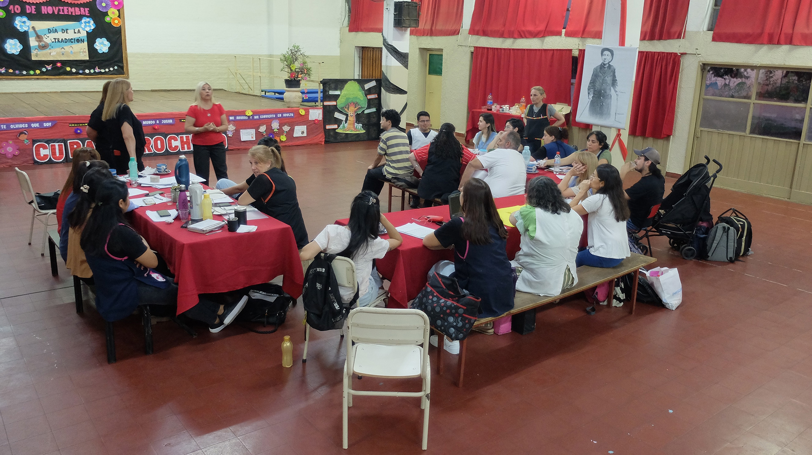
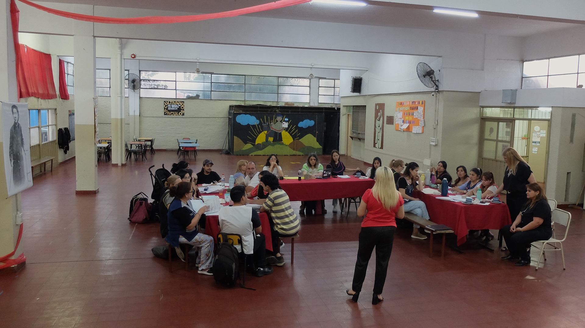
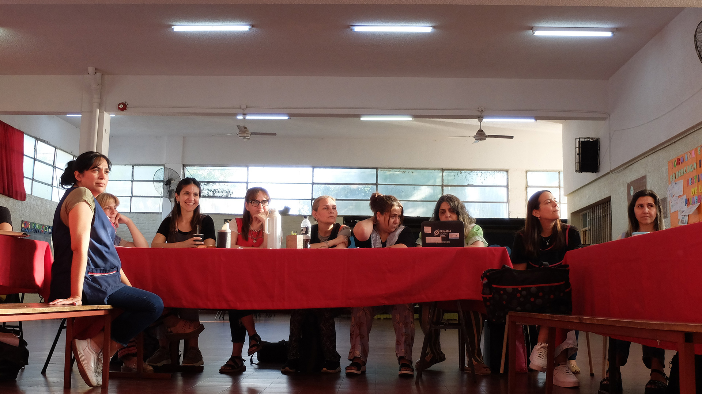
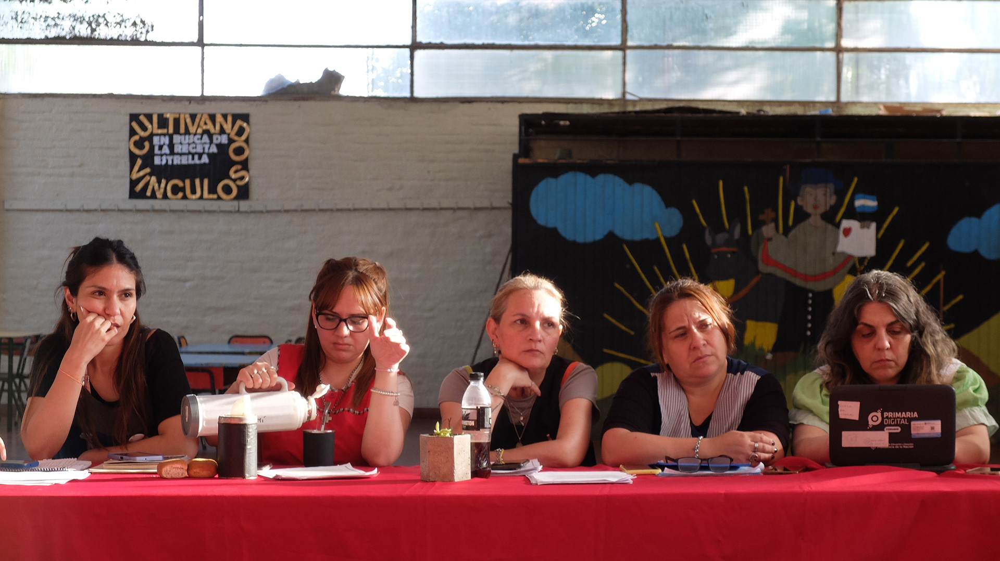
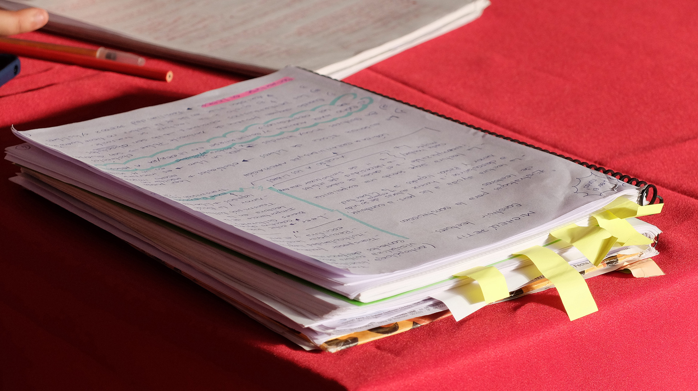

Etimologías
La palabra estudio proviene del latín studium con el significado de empeño, aplicación, celo, cuidado, desvelo.
En el aprender, el acento está colocado en el sujeto que aprende, sus inquietudes, deseos y propósitos, mientras que en el estudio el acento está colocado en la materia a ser estudiada. (...). Estudio señala, sobre todo, el deseo de colocarse en relación a algo, cuidarlo y prestarle atención.
Maximiliano Valerio López
Elogio del estudio
(pp. 204-205)
Apertura del encuentro de estudio

1 Escuela Primaria Cura Brochero. Salón de usos múltiples. Apertura de la jornada de trabajo a cargo de las autoridades de la institución. Luciana Dadone, 2024.

2 Escuela Primaria Cura Brochero. Salón de usos múltiples. Apertura de la jornada de trabajo a cargo de las autoridades de la institución. Luciana Dadone, 2024.

3 Escuela Primaria Cura Brochero. Salón de usos múltiples. Docentes participantes en la apertura de la jornada de trabajo. Luciana Dadone, 2024.

4 Escuela Primaria Cura Brochero. Salón de usos múltiples. Docentes participantes en la apertura de la jornada de trabajo. Luciana Dadone, 2024.

5 Escuela Primaria Cura Brochero. Salón de usos múltiples. Apertura de la jornada de trabajo. Cuaderno de una docente participante. Luciana Dadone, 2024.